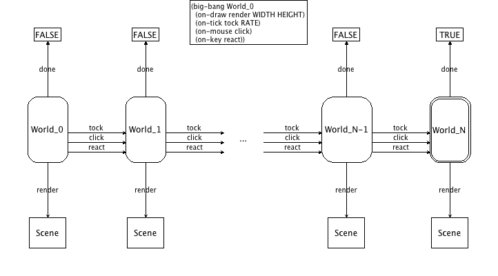
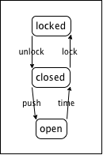
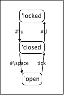

1.2 模拟和动画: "world.rkt"
| (require htdp/world) | package： htdp-lib |
注意：该库已被废弃；请改用2htdp/universe。有关如何将htdp/world程序转换为使用2htdp/universe， 请参阅移植世界程序到宇宙
注意：要快速从教育角度理解本教学包， 请参阅《程序设计方法（第二版）》的序言。 2008年8月，我们还编写了一本小册子How to Design Worlds，其中包含一系列项目。
本文档的目的，是为经验丰富的Racketer们提供有关使用该库、并将其用到其他地方的简明概述。 最后一节介绍了一个非常简单的领域内的第一个例子，适用于知道如何设计符号的条件函数的新手。
本教学包提供了两套工具。第一套工具允许学生创建并显示一系列动画场景，即模拟。 第二套工具是前者的一般化，增加了交互式GUI功能。
1.2.1 简单的模拟
函数
(run-simulation w h r create-image) → true
w : natural-number/c h : natural-number/c r : number? create-image : (-> natural-number/c scene)
(define (create-UFO-scene height) (place-image UFO 50 height (empty-scene 100 100))) (define UFO (overlay (circle 10 'solid 'green) (rectangle 40 4 'solid 'green))) (run-simulation 100 100 (/ 1 28) create-UFO-scene)
1.2.2 交互
动画从给定的“世界”开始，并响应计算机上的事件生成新的世界。本教学包记录“当前世界”， 同时支持三类事件：时钟的滴答；键盘的按下和释放；鼠标的移动和点击等。
程序可以通过安装处理程序来处理此类事件。 本教学包支持三种事件处理程序的安装：on-tick-event、 on-key-event和on-mouse-event。此外， 它还支持draw处理程序的安装，每次程序需要将当前世界可视化时都会调用它。
下图提供了“世界”工作的直观概述。

big-bang函数设置World_0为初始世界；回调tock、 react和click将一个世界转换为另一个世界； 每次done都检查世界是否是最终的；同时draw将每个世界呈现为场景。
World any/c
对于动画世界和游戏，使用本教学包必须提供World数据定义。原则上， 此数据定义没有任何限制。你甚至可以隐式地定义，即使这违反了设计诀窍。
函数
width : natural-number/c height : natural-number/c r : number? world0 : World (big-bang width height r world0 animated-gif?) → true width : natural-number/c height : natural-number/c r : number? world0 : World animated-gif? : boolean?
函数
(on-tick-event tock) → true
tock : (-> World World)
KeyEvent表示键盘事件，例如计算机用户按下或释放某个键。 char? KeyEvent表示用户按下字母数字键。 诸如'left、'right、'up、'down、 'release等符号表示箭头键或特殊事件，例如释放键盘上某个键。
函数
(key-event? x) → boolean?
x : any
函数
x : key-event? y : key-event?
函数
(on-key-event change) → true
change : (-> World key-event? World)
(define (change w a-key-event) (cond [(key=? a-key-event 'left) (world-go w -DELTA)] [(key=? a-key-event 'right) (world-go w +DELTA)] [(char? a-key-event) w] ; to demonstrate order-free checking [(key=? a-key-event 'up) (world-go w -DELTA)] [(key=? a-key-event 'down) (world-go w +DELTA)] [else w]))
MouseEvent (one-of/c 'button-down 'button-up 'drag 'move 'enter 'leave)
MouseEvent表示鼠标事件，例如计算机用户移动或点击鼠标。
函数
(on-mouse-event clack) → true
clack : (-> World natural-number/c natural-number/c MouseEvent World)
(define (create-UFO-scene height) (place-image UFO 50 height (empty-scene 100 100))) (define UFO (overlay (circle 10 'solid 'green) (rectangle 40 4 'solid 'green))) (big-bang 100 100 (/1 28) 0) (on-tick-event add1) (on-redraw create-UFO-scene)
1.2.3 第一个例子
1.2.3.1 对门的理解
假设我们要表示一扇会自动关闭的门。当门锁着时，你可以解锁。虽然这么做本身并没有打开门， 但现在可以这样做了。也就是说，未锁定的门还是关着的，此时推门就能打开。一旦放开开着的门， 自动闭门器就会接管并将其关上。当然，此时它可以被锁住。
将这个描述翻译成图片表示就是：

图片显示了所谓的“状态机”。三个带圆圈的词是对门非正式描述所确定的状态：锁定、关闭（且解锁）和打开。 箭头指定门如何从一个状态进入另一个状态。例如，当门打开时，随着时间的推移，自动闭门器会将门关上。 这个转换用标记为“时间流逝”的箭头表示。其他箭头以类似的方式表示转换：
“推”是指推开门（然后放开）；
“上锁”是指将钥匙插入锁中，转动到锁定位置的行为；
“解锁”和“上锁”相反。
1.2.3.2 世界的模拟
用程序模拟任何动态行为都需要完成两件不同的事。首先， 我们必须梳理出“世界”中随时间变化、或对操作做出反应的部分， 必须为这些信息开发数据表示D。请记住， 良好的数据定义可以使阅读者轻松地将数据映射到现实世界中的信息， 或者将现实世界中的信息映射为数据。对于世界的所有其他方面， 我们使用全局常量，包括渲染函数中需要用到的图形或图像常量。
其次，我们必须将“世界”中的操作——上图中的箭头——转换world教学包可以处理的计算机的交互。 一旦决定用时间表示一个方面、用鼠标移动表示另一个方面， 我们必须开发函数将世界的当前状态（表示为数据）映射到下一个世界状态。 由于数据定义D描述了代表世界的数据类，因此这些函数一般具有以下的契约和目的声明：
; tick : D -> D ; 处理时间的流逝 (define (tick w) ...) ; click : D Number Number MouseEvent -> D ; 处理当前世界w中、位于(x,y)的、me类型的鼠标点击 (define (click w x y me) ...) ; control : D KeyEvent -> D ; 处理当前世界w中的键盘事件（symbol、char）ke (define (control w ke) ...)
也就是说，一旦定义了如何用数据表示世界，这些函数的契约也就被决定了。
典型的程序并不使用所有这三个操作和函数，通常只使用一或二个。 此外，这里仅提供了这些函数的顶层、初始设计目标。经常会需要设计许多辅助函数。
1.2.3.3 门的模拟：数据
我们的第一个目标是将世界表示为数据。在这个具体的例子中，世界由门组成， 门的变化是锁定、解锁但还是关闭、或者打开。我们使用三个符号来表示这三种状态：
; 数据定义。 ; 门的状态（SD）是以下之一： ; – 'locked ; – 'closed ; – 'open
符号在这里特别适合，因为它们直接表达门的状态。
现在我们已经有了数据定义，还必须决定哪些计算机操作和交互应该模拟对门的各种操作。 对门的状态和过渡的图形，特别是从“打开”到“关闭”的箭头表明，这需要使用模拟时间的函数。 对于其他三个箭头，可以使用键盘事件，或鼠标单击，或两者都用。这里使用三个按键： #\u用于解锁， #\l用于上锁， #\space用于开门。 我们可以将上述“状态机”从信息世界转换为数据世界，以图形方式表达这些选择：

1.2.3.4 门的模拟：函数
分析和数据定义得出三个需要设计的函数：
automatic-closer，一次时钟滴答时关上门；
door-actions响应按键并操作门；
render，将门的当前状态转换为可见的场景。
从automatic-closer开始吧。我们知道它的契约，目的声明也很容易完善：
; automatic-closer : SD -> SD ; 在一次滴答后关闭敞开的门 (define (automatic-closer state-of-door) ...)
当世界只能处于三种状态之一时，编写例子非常简单：
输入状态
输出状态
’locked
’locked
’closed
’closed
’open
’closed
; automatic-closer : SD -> SD ; 在一次滴答后关闭敞开的门 (check-expect (automatic-closer 'locked) 'locked) (check-expect (automatic-closer 'closed) 'closed) (check-expect (automatic-closer 'open) 'closed) (define (automatic-closer state-of-door) ...)
模板步骤需要带有三个子句的条件：
(define (automatic-closer state-of-door) (cond [(symbol=? 'locked state-of-door) ...] [(symbol=? 'closed state-of-door) ...] [(symbol=? 'open state-of-door) ...]))
例子基本上决定了三个子句的结果必须是：
(define (automatic-closer state-of-door) (cond [(symbol=? 'locked state-of-door) 'locked] [(symbol=? 'closed state-of-door) 'closed] [(symbol=? 'open state-of-door) 'closed]))
不要忘了运行例子/测试。
对于图中另外的三个箭头，我们设计函数，对三个选定的键盘事件做出反应。 如上所述，处理键盘事件的函数读入世界外加键盘事件：
; door-actions : SD Keyevent -> SD ; 键盘事件模拟门的操作 (define (door-actions s k) ...)
输入状态
输入键盘事件
输出状态
’locked
#\u
’closed
’closed
#\l
’locked
’closed
#\space
’open
’open
—
’open
这些例子结合了上图所示的内容，以及我们将操作映射到键盘事件时所做的选择。
接下来将其转变为完整的设计很简单：
(define (door-actions s k) (cond [(and (symbol=? 'locked s) (key=? #\u k)) 'closed] [(and (symbol=? 'closed s) (key=? #\l k)) 'locked] [(and (symbol=? 'closed s) (key=? #\space k)) 'open] [else s])) (check-expect (door-actions 'locked #\u) 'closed) (check-expect (door-actions 'closed #\l) 'locked) (check-expect (door-actions 'closed #\space) 'open) (check-expect (door-actions 'open 'any) 'open) (check-expect (door-actions 'closed 'any) 'closed)
最后，但并非最不重要的，需要将世界当前状态渲染为场景的函数。 简单起见，这里用足够大的文本就行了：
; render : SD -> Scene ; 将门的当前状态转换为大文本 (define (render s) (text (symbol->string s) 40 'red)) (check-expect (render 'closed) (text "closed" 40 'red))
一切设计正确后，就可以运行程序了。对world教学包来说， 这意味着我们必须指定哪个函数处理滴答事件、键盘事件和重绘：
(big-bang 100 100 1 'locked) (on-tick-event automatic-closer) (on-key-event door-actions) (on-redraw render)
现在轮到你来收集这些片段，然后用big-bang运行它们以确定是否全部有效。